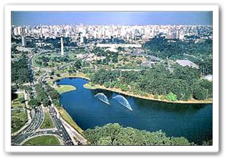
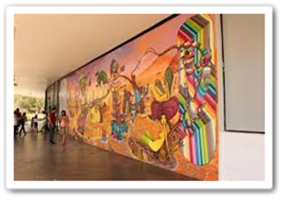
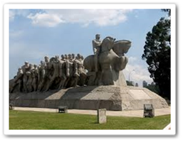

1. Ibirapuera Park


Ibirapuera Park is a major urban park in São Paulo, Brazil. It has a large area for leisure, jogging and walking, as well a vivid cultural scene with museums and a music hall. Its importance to São Paulo is often comparable to that of Central Park to New York City, Golden Gate Park to San Francisco.
|
The Structures and Monuments installed here are:
Gardens and Landscapes:
|
 |
2. Sao Paulo Cathedral


The São Paulo See Metropolitan Cathedral is the cathedral of the Roman Catholic Archdiocese of São Paulo, Brazil, one of the most stunning creations in the world.
The serenity and peace one feels visiting a church as such is beyond compare. Visit to believe!